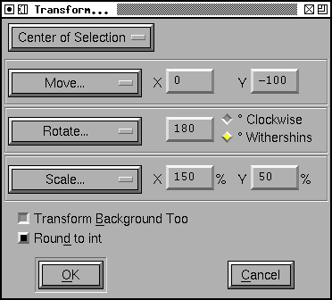
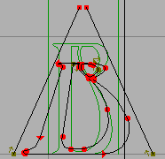

Transform Dialog

This dialog is available in the font, outline and metrics views. In the font view it applies to all selected glyphs. In the outline view if there is a selection then it applies to that. if there is no selection then it applies to the entire glyph.
You may choose whether you want the transformation to be centered at the glyph's origin, the center of the selection (or of the glyph as a whole if there is no selection), or the location of the last point on which you clicked the mouse.
You may apply several different transformations at once:
- Do Nothing
- A very simple transformation.
- Move
- You may move the selection an arbitrary amount in the x and y directions
- Rotate
- You may rotate the selection an arbitrary number of degrees.
- Scale
- You may scale the two coordinates differently
- Scale Uniformly
- You may scale the two coordinates the same amount (which can of course be done above, but it's slightly easier only to set one number).
- Flip
-
You may flip either horizontally or vertically
Note: After flipping an outline you will almost certainly want to apply Element->Correct Direction. - Skew
- You may skew the selection a certain number of degrees (to create an oblique font for example).
- Rotate 3D Around...
-
You may do a three dimensional rotation of the glyph around either the X
axis or the Y axis. This operation is immediately followed by a projection
of the result back into the xy-plane (A rotation around the Z axis is a normal
rotaton (and isn't included here).
Following the rotation by a projection produces the same results no matter what the sign of the angle (so there are no Clockwise/CounterClockwise options here). - Move by Ruler
- Fill in the amount to move from the x and y offsets of the last measurements made with the ruler tool.
- Rotate by Ruler
- Fill in the rotation angle from the angle of the last measurements made with the ruler tool.
- Skew by Ruler
- Fill in the skew angle from the angle of the last measurements made with the ruler tool.
If you are in the font view, and if Copy From is set to all fonts, then the transformation will also be applied to the bitmaps. Not all of these transforms can be mapped to ones on the bitmap font (arbitrary rotations, scales, etc. do not map). Only rotations by 90 degrees, flips, skews and moves will be approximated on the bitmap glyphs.
If you are in the font view, then any pair-wise kerning information whose first glyph is selected will be scaled (but not translated) by the transformation matrix. Similarly and simple positioning features that apply to a selected glyph will be transformed by the matrix (but again not translated). You may choose to scale kerning classes as well.
If you are in the font view or the outline view and there is no selection (and you are in the foreground) there is a "[] Transform Background Too" check box. If you check this then anything in the background will be transformed with the foreground.
If you check [] Round to Int then after the transformation has been applied everything will be rounded to an integer value.
Transformations in the Outline glyph view are not applied to any bitmaps. (Nor are transformations in the bitmap window mapped back to the outline).
Non-Linear Transformations
 Non-linear
transformations are defined by providing two expressions, one of which results
in the transformed value for the X coordinate, the other provides the y
coordinate. In the example at right:
Non-linear
transformations are defined by providing two expressions, one of which results
in the transformed value for the X coordinate, the other provides the y
coordinate. In the example at right:
x' = 5·x2 + x + 3·sin(y)
y' = y
Expressions may be made up of the usual C operators: "+", "-", "*", "/", "%", "!", "==", "<", ">", "<=", ">=", "!=", "&&", "||" and "? :" as well as "^" which means "raise to the power of". They may also contain the standard functions: "log", "exp", "sqrt", "sin", "cos", "tan", "atan2", "abs", "rint", "floor", "ceil".
Note: In non-linear transformations the result is only an approximation to the correct result (A linear transformation will transform a cubic spline to another cubic spline. A non-linear transformation may not).
 Point
of View Projection
Point
of View Projection
I have a hard time describing this. There are three different coordinate systems involved. There is the (2D) coordinate system in which your glyph has been drawn. There is a 3D coordinate system in which we embed it, and finally there is another 2D coordinate system onto which we project it.
Assume your eye is at the origin of 3 space, and you are looking up along the Z axis. Assume that the plane in which your glyph has been drawn is tilted by an angle theta (from the XY plane in 3 space) and the intersection between the Z axis and the drawing plane is z units along the Z axis. Assume that the projection plane is parallel to the XY plane and is at a distance d along the Z axis.
Then for each point in the glyph we draw a line between that point and your eye (which is at the origin). The location where that line intersects the projection plane is the transformed location of that point. Again the result is only an approximation.
The Point Of View dialog gives you a little more freedom than is described above. It allows you to set the location of the eye (instead of fixing it at the origin), and allows you to change in what direction the vanishing point will lie (instead of fixing it on the y axis).
The dialog also calculates the location of the vanishing point as you change fields (Note: It cannot figure out meta information like "Center of Selection", so whenever the eye is positioned with this value, it just assumes a value of 0 for that coordinate.